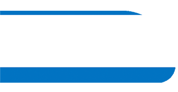
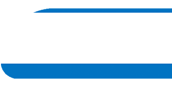

"Wie de groene weg bewandelt, laat je een spoor achter voor de komende generaties."
Groene trambanen hebben enorm veel voordelen voor mens, dier en natuur. Naast een mooi uiterlijk heeft het groene spoor namelijk ook nog een wetenschappelijke toegevoegde waarde. Klik hier rechts op de knop als je graag wilt weten hoe deze innovatie onze stad kan verrijken.

Ondanks de geweldige groene sporen die er al in Amsterdam zijn, hebben we nog veel winst te behalen. Met onze interactieve map kun je nu zien welke impact we kunnen maken als al onze trams op gras zouden rijden. Dus klik op de knop rechts en kleur Amsterdam groen!